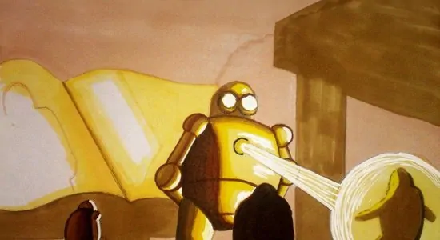

Sou casado e estou aguardando a chegada de uma princesa chamada Liah.
Sou apaixonado pelo Arsenal FC clube de futebol de Londres,
sonho em um dia poder visitar a Inglaterra
para assistir um jogo direto do estádio. GoGunners! rsrsrs
Amo videogame, jogos de tabuleiros e Magic The Gathering, jogo que conheci a quase 20 anos,
mas que a aproximadamente 5 anos voltei a jogar, inclusive caso tenha vontade de conhecer,
deixarei um vídeo explicando um pouco sobre esse jogo que cativa e diverte as pessoas a mais
de 30 anos.
E por último e não menos importante, sou um Nintendista declarado rsrsrs
Seção de Imagem e Vídeo
Minha arte favorita de Magic The Gathering, ela me lembra de quando eu comecei a jogar, no
inicio dos anos 2000
